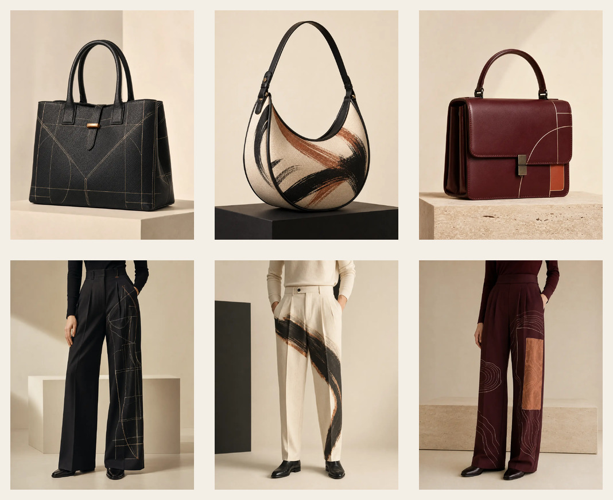

Handwerk
Präzise Linien, ausgewählte Materialien und Details, die leise Eindruck hinterlassen.
Luxurious Collection · Auf Anfrage
Skulpturale Taschen und präzise Silhouetten für Menschen mit eigener Handschrift. Im Atelier entsteht jedes Design erst auf Ihre Anfrage – kompromisslos persönlich.
Made on request · Persönlich kuratiert · Einzeln gefertigt

Präzise Linien, ausgewählte Materialien und Details, die leise Eindruck hinterlassen.
Proportion, Farbe und Finish werden im persönlichen Dialog für Sie komponiert.
Eine Atelier-Edition wählen oder gemeinsam ein vollkommen neues Einzelstück entwickeln.
Kollektion
Bespoke
Sie wählen einen Entwurf aus der Kollektion. Details, Machbarkeit und Umfang werden persönlich abgestimmt.
Zur KollektionSie beschreiben Richtung, Anlass und Wünsche. Daraus entsteht ein abgestimmter Entwurfsprozess.
Ablauf
Atelier
Im Atelier treffen klare Linien auf individuelle Wünsche. So entstehen Taschen und Hosen mit Haltung – persönlich abgestimmt und ausschließlich auf Anfrage gefertigt.
FAQ
Sie senden erste Wünsche. Preis, Umfang, Machbarkeit und Zeitrahmen werden danach individuell abgestimmt.
Ja, Anpassungen können angefragt werden. Ob sie möglich sind, wird persönlich geprüft.
Nein. Preise ergeben sich aus Designrichtung, Umfang und Abstimmung.
Kategorie, gewünschtes Design, Anlass, Stilrichtung, Farb- oder Printwünsche und ein optionaler Budgetrahmen.
Maße und Details werden erst nach der ersten Anfrage in einem geeigneten Prozess geklärt.
Nein. Alle Artikel werden ausschließlich auf Anfrage gefertigt.
Anfrage
Bitte senden Sie keine sensiblen Maßdaten im Erstkontakt. Eine Zusammenfassung wird vor dem Versand angezeigt.